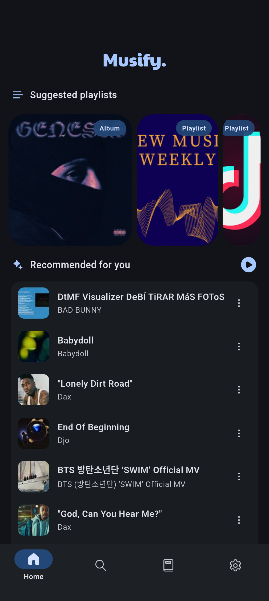
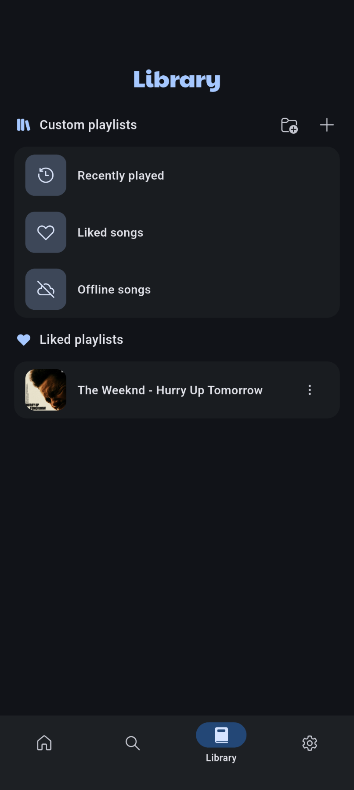
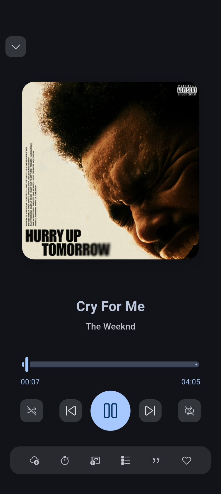
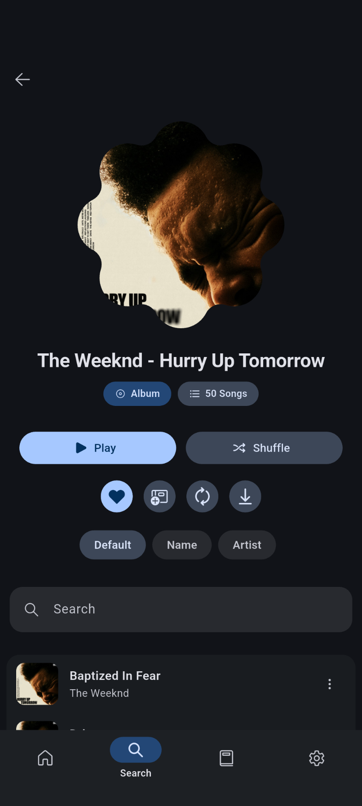

No ads
Listen without interruptions or paywalls.
Free · Open source · No ads
Stream effortlessly with one app. WiyaMusic brings search, offline listening, lyrics, equalizer presets, and SponsorBlock together in a clean Material experience — with no subscriptions.


Listen without interruptions or paywalls.
Download songs and keep your library with you.
Inspect, contribute, and self-verify every release.
Features
Built for discovery and daily listening, with the extras that usually hide behind subscriptions.
Find songs fast with online search and suggestions.
Save tracks and keep playing without a connection.
Back up your data so you never lose your library.
Add playlists with a link and build your own mixes.
Skip sponsored segments automatically while you listen.
Follow along with lyrics while the track plays.
Tune the sound with presets for different moods.
Accent colors and dynamic colors on Android 12+ keep the UI personal.
Stay current with releases directly from the app.
Screenshots
Home, library, now playing, and album views designed for mobile first.




Open source
WiyaMusic is licensed under GPL v3.0. You can use, modify, and distribute it freely while keeping the source open. Contributions are welcome.
FAQ
Yes. There are no ads and no subscriptions. The app is free software under the GPL v3.0 license.
Get the latest APK from GitHub Releases or install from F-Droid.
Yes. You can download songs for offline listening and export or import your data to keep your library safe.
See the community discussion here.
Download the latest release and stream without noise, ads, or subscriptions.